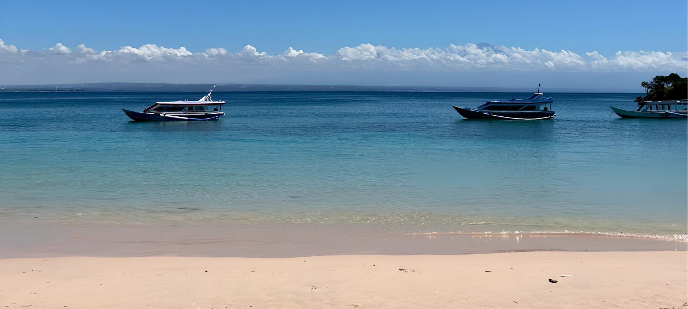
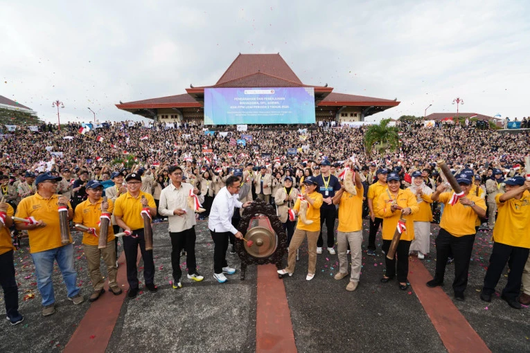
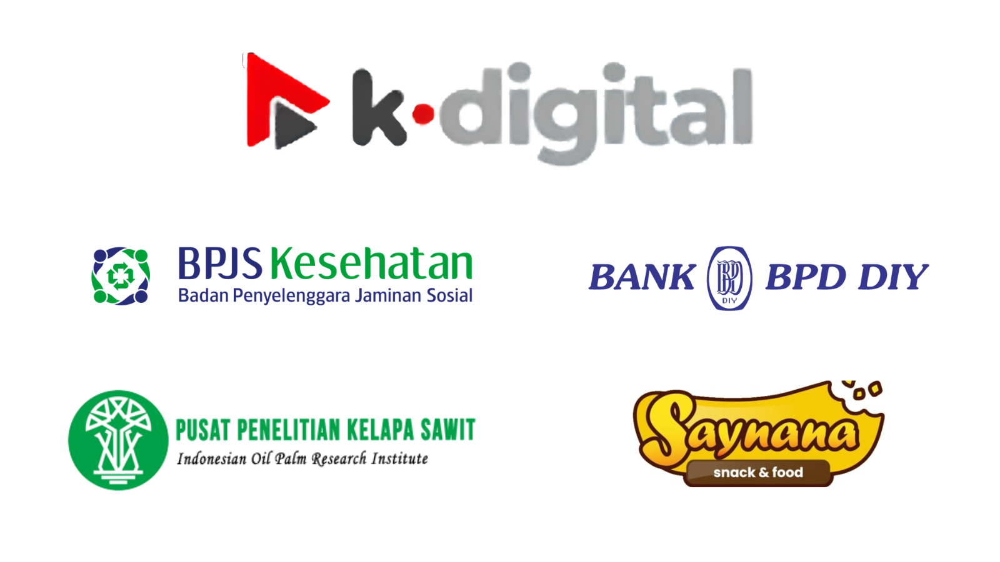

Jerowaru
Salah satu Kecamatan yang ada di Kabupaten Lombok Timur, dikenal sebagai sentra perikanan tangkap terbesar di Lombok Timur sekaligus memiliki potensi pariwisata bahari yang kuat, mulai dari Pantai Pink hingga kawasan Ekas yang populer untuk surfing, diving, dan snorkeling.
Tentang Kegiatan
KKN-PPM UGM 2026
Kolaborasi aksi nyata dan inovasi berkelanjutan dari mahasiswa UGM untuk kemajuan masyarakat di Kecamatan Jerowaru, Lombok Timur.

Kegiatan Kuliah Kerja Nyata – Pembelajaran Pemberdayaan Masyarakat (KKN-PPM) Universitas Gadjah Mada Periode II Tahun 2026 merupakan bentuk nyata pengabdian mahasiswa kepada masyarakat melalui pendekatan interdisipliner, kolaboratif, dan berbasis kebutuhan lokal.
Tema yang Diusung:
"Mewujudkan Sustainable Welfare Berbasis Kearifan Lokal melalui Inovasi Agro-Maritim: Penguatan Kapasitas Masyarakat, Peningkatan Ecotourism, dan Optimalisasi Infrastruktur Menuju Desa Sekaroh dan Seriwe yang Berdaya"
Dua Desa, Satu Misi
Kecamatan Jerowaru, Nusa Tenggara Barat

Desa Sekaroh
Desa Sekaroh merupakan wilayah yang terletak di Kecamatan Jerowaru, Kabupaten Lombok Timur. Desa ini memiliki potensi sumber daya alam dan pariwisata bahari yang signifikan, meliputi deretan pesisir dan gili seperti Pantai Pink, Gili Petelu, Pantai Segui, serta kawasan konservasi penyu di Tanjung Bloam.
- 👥 Populasi penduduk tercatat sebanyak 4.197 jiwa
- 🏖️ Dikenal sebagai lokasi destinasi pariwisata unggulan Pantai Pink
- 🤿 Memiliki kawasan ekowisata dan area snorkeling di Gili Petelu

Desa Seriwe
Desa Seriwe merupakan wilayah administratif hasil pemekaran dari Desa Pemongkong yang berlokasi di Kecamatan Jerowaru, Kabupaten Lombok Timur. Memiliki luas wilayah sekitar 14,67 km², desa ini diklasifikasikan ke dalam kategori Inpres Desa Tertinggal (IDT). Demografi masyarakat Seriwe bersifat majemuk dengan kehadiran penduduk pendatang multietnis, di mana pranata adat setempat dipimpin oleh tokoh yang dikenal dengan sebutan Gawah Seriwe.
- 👥 Memiliki total populasi penduduk sebanyak 3.635 jiwa
- 🌾 Mata pencaharian utama masyarakat berpusat pada sektor pertanian dan perikanan
- 🌽 Menghasilkan komoditas unggulan daerah berupa jagung dan rumput laut
Galeri
Tentang Jerowaru
Dukungan & Kolaborasi
Mitra Saat Ini
Institusi dan perusahaan yang telah mendukung kegiatan KKN-PPM UGM pada periode saat ini
